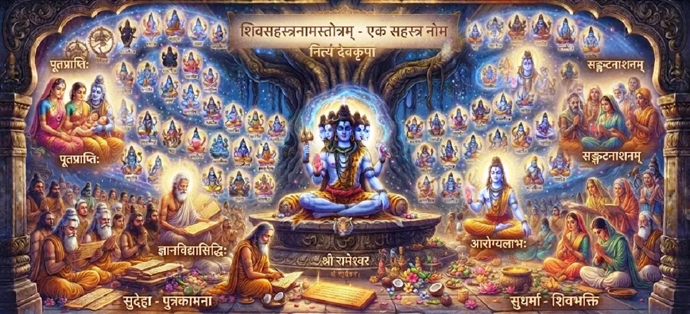

शिव पूजा के माध्यम से शिव भक्ति का शाश्वत पुरस्कार
कोटिरुद्र संहिता का बयालीसवाँ अध्याय उन लोगों द्वारा प्राप्त गहन और चिरस्थायी आध्यात्मिक पुरस्कारों पर प्रकाश डालता है जो अपना जीवन भगवान शिव की दृढ़ भक्ति और पूजा के लिए समर्पित करते हैं।
यह अध्याय इस संहिता के भीतर पूजा पर मूल शिक्षाओं के लिए एक शानदार निष्कर्ष के रूप में कार्य करता है, जो दिव्य प्रेम के शाश्वत फल पर प्रकाश डालता है।
अध्याय 42 की मुख्य बातें
चिरस्थायी फल
सच्ची भक्ति का स्थायी आध्यात्मिक पुरस्कार।
अटल विश्वास
महादेव के प्रति गहरी, अटूट भक्ति विकसित करना।
दैवीय सुरक्षा
भक्त को आध्यात्मिक भटकाव से बचाना।
निर्बाध शांति
शिव की कृपा से सतत सद्भाव में रहना।
शाश्वत साम्य
सर्वोच्च के साथ दिव्य एकता में सदैव निवास करना।
परम पूर्ति
मानव विकास के पूर्ण शिखर पर पहुंचना।
इस अध्याय में मुख्य विषय
शिव भक्ति का सच्चा स्वरूप
यह खंड सच्ची भक्ति को न केवल यांत्रिक पूजा के रूप में परिभाषित करता है, बल्कि सभी प्राणियों और रूपों में भगवान शिव के प्रति उमड़ते, निःस्वार्थ प्रेम के रूप में परिभाषित करता है।
इसके लिए ईमानदारी, समर्पण और निरंतर स्मरण की आवश्यकता होती है।
भक्ति का शाश्वत प्रतिफल
समय के साथ क्षीण होने वाले सांसारिक लाभों के विपरीत, शिव भक्ति के पुरस्कार अविनाशी हैं, जो आत्मा को अनंत शांति, आंतरिक धन और दिव्य आनंद प्रदान करते हैं।
भक्त आध्यात्मिक कृपा का धनी बन जाता है।
दैवीय संरक्षण और अनुग्रह
भगवान शिव अपने सच्चे भक्तों को नकारात्मक प्रभावों, नैतिक पतन और अज्ञान के जाल से दृढ़ता से बचाते हैं, और यह सुनिश्चित करते हैं कि वे कभी भी धार्मिक मार्ग से न भटकें।
उनका सुरक्षा कवच समर्पित आत्मा को घेरे रहता है।
गहन आंतरिक परिवर्तन
निरंतर भक्ति क्रोध, लालच और अहंकार के मन को शुद्ध करती है, और उन्हें करुणा, धैर्य और दिव्य ज्ञान से बदल देती है।
उपासक महादेव के शांतिपूर्ण गुणों को प्रतिबिंबित करता है।
महादेव के साथ परम मिलन
शिव भक्ति की पराकाष्ठा सर्वोच्च भगवान के साथ स्थायी मिलन है, जहां व्यक्तिगत आत्मा सभी नश्वर सीमाओं से मुक्त होकर शाश्वत आनंद में विश्राम करती है।
यह शास्त्रों में वर्णित सर्वोच्च गंतव्य है।
उमा संहिता अवलोकन में परिवर्तन
कोटिरुद्र संहिता की पूजा, गुणों और भक्ति की गहन खोज को समाप्त करते हुए, पाठ पाठक को उमा संहिता अवलोकन में परिवर्तन के लिए तैयार करता है।
पाठकों को आगामी पवित्र खंड का पता लगाने के लिए आमंत्रित किया जाता है।
अध्याय 42 की मुख्य शिक्षाएँ
अविनाशी फल
पुरस्कार जो जीवन भर तक चलते हैं।
दृढ़ भक्ति
भक्ति शुद्ध, निःस्वार्थ प्रेम में निहित है।
भयंकर सुरक्षा
शिव अपने भक्तों को आध्यात्मिक हानि से बचाते हैं।
आंतरिक शांति
जीवन के तूफ़ानों के बीच अटल शांति.
दिव्य एकता
महादेव के साथ शाश्वत कृपा में विलीन हो जाना।
सर्वोच्च नियति
परम आध्यात्मिक लक्ष्य तक पहुँचना।
आध्यात्मिक चिंतन
अध्याय 42 कोटिरुद्र संहिता के मुख्य पूजा अध्यायों के माध्यम से हमारी यात्रा का एक शानदार समापन लाता है। यह हमें याद दिलाता है कि शिव भक्ति कोई लेन-देन की व्यवस्था नहीं है, बल्कि हृदय का गहरा परिवर्तन है। जब हम भगवान शिव को अपना सच्चा प्यार, अटूट विश्वास और दैनिक पूजा करते हैं, तो हमें जो पुरस्कार मिलता है वह क्षणभंगुर सांसारिक लाभ नहीं है, बल्कि शाश्वत शांति, दिव्य सुरक्षा और पूर्ण मुक्ति है। यह अध्याय हमें महादेव के प्रेमपूर्ण मार्गदर्शन में हर दिन चलते हुए, अपनी भक्ति को अपने सबसे बड़े खजाने के रूप में संजोने के लिए प्रेरित करे।
अध्याय 42 का संदेश जीना
जीवन के हर पल को भगवान शिव को अर्पण के रूप में देखते हुए, अपने हृदय में शुद्ध, निःस्वार्थ भक्ति पैदा करें।
महादेव की दिव्य सुरक्षा में निश्चिंत रहें, यह जानते हुए कि वह अपने सच्चे भक्तों को सभी आध्यात्मिक खतरों से बचाते हैं।
करुणा, शांति और विनम्रता को सर्वोच्च के साथ अपने गहरे संबंध की जीवंत अभिव्यक्ति के रूप में अपनाएं।
प्रमुख आध्यात्मिक अवधारणाएँ
भगवान शिव के प्रति निश्चल, प्रेमपूर्ण भक्ति।
आध्यात्मिक गुण जो कभी कम या क्षीण नहीं होते।
अपने भक्तों पर शिव की कृपा दृष्टि बनी रहती है।
नकारात्मक गुणों से मन की शुद्धि।
परम एकता और सर्वोच्च में तल्लीनता।
आत्मा की ईश्वर में पूर्ण संतुष्टि।
अध्याय सारांश
कोटिरुद्र संहिता अध्याय 42 शिव भक्ति के शाश्वत पुरस्कारों का गुणगान करता है। इसमें बताया गया है कि कैसे सच्ची, निःस्वार्थ भक्ति अविनाशी आध्यात्मिक फल, उग्र दैवीय सुरक्षा, गहरा आंतरिक परिवर्तन और महादेव के साथ परम जुड़ाव लाती है, पूजा अनुभाग को खूबसूरती से समाप्त करती है और पाठक को उमा संहिता अवलोकन के लिए तैयार करती है।
अक्सर पूछे जाने वाले प्रश्न
1. कोटिरुद्र संहिता अध्याय 42 का प्राथमिक विषय क्या है?
अध्याय 42 में भगवान शिव के प्रति दृढ़ भक्ति विकसित करने वालों को दिए जाने वाले शाश्वत पुरस्कारों, चिरस्थायी आध्यात्मिक पूर्ति और असीम कृपा का विवरण दिया गया है।
2. यह अध्याय पिछले अध्याय का अनुसरण कैसे करता है?
अध्याय 41 में यह जानने के बाद कि शिव पूजा कैसे मुक्ति लाती है, यह अध्याय सच्ची शिव भक्ति के साथ मिलने वाले पुरस्कारों की स्थायी, शाश्वत प्रकृति पर विस्तार करता है।
3. इस अध्याय में किस प्रकार के आध्यात्मिक पुरस्कारों पर जोर दिया गया है?
पुरस्कारों में निर्बाध आंतरिक आनंद, आध्यात्मिक पतन से पूर्ण सुरक्षा, निरंतर दिव्य उपस्थिति और महादेव के साथ शाश्वत संवाद शामिल हैं।
4. आगे कौन सा खंड या संहिता आती है?
अगला भाग उमा संहिता अवलोकन है।
"सच्ची शिव भक्ति के पुरस्कार अविनाशी हैं, जो समर्पित आत्मा को शाश्वत सुरक्षा, आंतरिक शांति और महादेव में परम साम्य प्रदान करते हैं।"
शिव पुराण के माध्यम से जारी रखें
अध्याय 42 कोटिरुद्र संहिता में पूजा प्रवचन का समापन करता है। उमा संहिता अवलोकन जारी रखें।